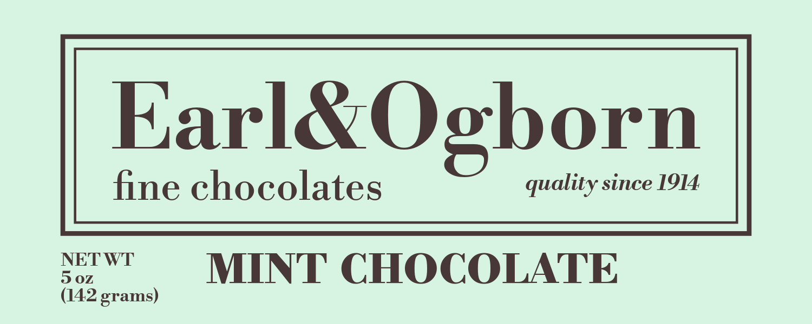
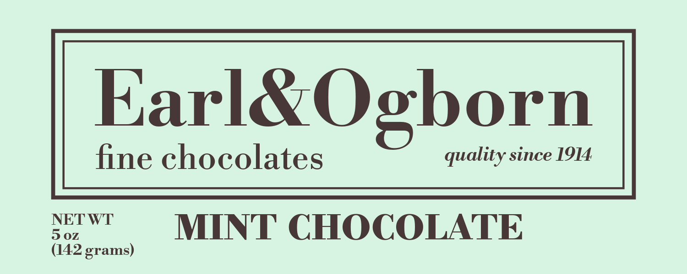

Bodoni*
About Features Styles Glyphs Test
 



Reliable Elegance
Some typefaces are fashionable. Bodoni is beautiful.
Giambattista Bodoni helped to establish and perfect a new class of typeface over his lifetime: the “Modern Serif.” Building on the designs
of the likes of Baskerville, Bodoni increased the contrast between the thick and thin strokes, which was made possible due to advances in
printing technology during the late seventeen hundreds. The result is some of the most refined, dignified, elegant, and just plain classy
letterforms of all time. Although originally designed for books, the modern serifs quickly found their place as display typefaces. This class
of letterform can be found just about anywhere from the titles of newspapers, to high-fashion hotels, or advertizing a holiday sale.
Anywhere timeless beauty is appropriate, Bodoni* will fit the bill.
Bodoni* is an expansion of Pablo Impallari and Rodrigo Fuenzalida’s “Libre Bodoni”
Bodoni* was not created from scratch. It was created by taking the pre-existing digital typeface: “Libre Bodoni” which
is available in two weights: Normal and Bold, and expanding the typeface to a whopping four weights: Book, Medium, Bold and Fatface. Bodoni*
also improves on the original design with point size variants.
Bodoni* may be a more versatile typeface, but it would not exist without the hardworking and generous people behind
“Libre Bodoni.” “Libre Bodoni” is available for download here, and both “Libre Bodoni” and Bodoni* are licenced under the SIL Open Font License (OFL).